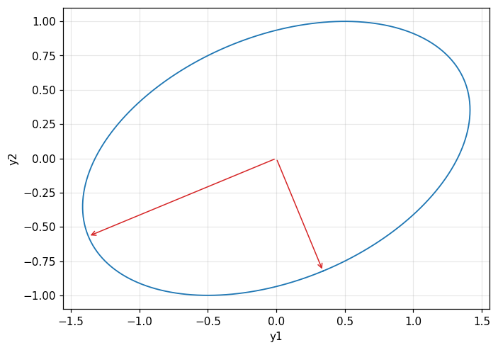

Binary hypothesis testing with a vector Gaussian observation, the likelihood ratio reducing to a difference of quadratic forms; the equal-covariance case (a linear sufficient statistic, the detection parameter d^2), the equal-mean case (an energy detector, a chi-square statistic), and symmetric hypotheses (Barkat, chapter 9).
Set up the general Gaussian problem for vector binary hypothesis testing, and derive the likelihood ratio test as a difference of two quadratic forms.
With equal covariance, derive the linear sufficient statistic T(y)=\Delta m^TC^{-1}y and the detection parameter d^2=\Delta m^TC^{-1}\Delta m.
Diagonalize a nondiagonal covariance matrix by an orthogonal rotation (the eigenvalue problem), then reapply the test in the new coordinate system.
With equal means, derive the energy detector T(y)=\sum y_k^2, recognise the chi-square distribution, and compute P_D,P_F.
Apply this to symmetric hypotheses, build a dual energy detector, and compute the error probability by numerically integrating two independent chi-square densities.
Use the buttons, the dots or the ← → keys to move between slides.
PART 1/5
01
The general Gaussian problem: setting it up
Situation: Definition: a testing or estimation problem is "general Gaussian" if the conditional density is Gaussian for every hypothesis/parameter — this framework covers most examples already met in chapters 5, 6.
Complication: With a vector observation Y=X+N, the log-likelihood-ratio test reduces to a difference of two quadratic forms in y, one per hypothesis, needing the mean vector m_j and covariance matrix C_j.
Resolution: Evaluating the difference of quadratic forms depends on the constraint placed on m_j,C_j — three standard cases are studied: equal covariance, equal mean, and symmetric.
Defining the general Gaussian problem
The vector likelihood ratio test
The three standard cases to be studied
1/5 · The general Gaussian problem: setting it up
Definition: when a problem is "general Gaussian"
A hypothesis-testing problem is called a general Gaussian problem if the conditional density f_{Y|H_j}(y|H_j) is a Gaussian density function for every j; similarly, an estimation problem is general Gaussian if f_{Y|\Theta}(y|\theta) is Gaussian for every \theta (Barkat, pp. 503 to 504). This is exactly the framework used implicitly in the Gaussian examples throughout chapters 5 and 6 (modules 21, 22) — now fully generalised to a multidimensional vector observation instead of one or a few scalar samples.
1/5 · The general Gaussian problem: setting it up
The vector observation: Y=X+N
Consider H_1{:}\,Y=X+N, H_0{:}\,Y=N, with Y,X,N all K\times1 vectors. Each hypothesis is characterised by a mean vector m_1=E[Y|H_1], m_0=E[Y|H_0], and a covariance matrix C_1=E[(Y-m_1)(Y-m_1)^T|H_1], C_0=E[(Y-m_0)(Y-m_0)^T|H_0] (Barkat, pp. 503 to 504). The multivariate Gaussian density is f_{Y|H_j}(y|H_j)=\dfrac{1}{(2\pi)^{K/2}|C_j|^{1/2}}\exp\left[-\tfrac12(y-m_j)^TC_j^{-1}(y-m_j)\right].
The likelihood ratio test reduces to a difference of quadratic forms
Substituting the Gaussian density into the likelihood ratio \Lambda(y) and taking the logarithm, the likelihood ratio test becomes \tfrac12(y-m_0)^TC_0^{-1}(y-m_0)-\tfrac12(y-m_1)^TC_1^{-1}(y-m_1)\gtrless\gamma, with \gamma=\ln\eta+\tfrac12(\ln|C_1|-\ln|C_0|) (Barkat, pp. 504 to 505). This is the common starting point for every general Gaussian problem: the test is always a difference of quadratic forms, and how it simplifies further depends on the constraint placed on m_j,C_j.
Evaluating the difference of quadratic forms further depends on the constraint: (1) equal covariance C_1=C_0=C (parts 2, 3) — the test reduces to a linear sufficient statistic; (2) equal mean m_1=m_0 (part 4) — the test reduces to a chi-square energy detector; (3) symmetric hypotheses, equal zero mean but the signal-noise roles swapped between two halves of the vector (part 5) — a dual energy detector (Barkat, pp. 505 to 506, 517 to 528).
1/5 · The general Gaussian problem: setting it up
Connection to chapter 5: the same framework, now vectorial
Examples 5.1, 5.2 (module 21) are special cases of part 2 below with K=1 or independent equal-variance samples: the \hat m_{ml} and threshold \gamma there are exactly the one-dimensional projection of the linear sufficient statistic T(y)=\Delta m^TC^{-1}y to be derived in part 2. Generalising to a vector allows handling real radar/sonar problems where several samples are correlated through a covariance matrix that is not a multiple of the identity.
1/5 · The general Gaussian problem: setting it up
Self-check, part 1
When is a problem called \"general Gaussian\"?
What form does the log-likelihood-ratio test of the general Gaussian problem reduce to?
What are the three standard cases studied in this chapter?
Hints: when the conditional density is Gaussian for every hypothesis/parameter; a difference of two quadratic forms in y; equal covariance, equal mean, and symmetric.
PART 2/5
02
Equal covariance: a linear sufficient statistic
Situation: With C_1=C_0=C, the quadratic-in-y terms cancel, leaving the linear test T(y)=\Delta m^TC^{-1}y with \Delta m=m_1-m_0.
Complication:T(y) is a linear combination of Gaussian variables so it is itself Gaussian; the detection parameter d^2=\Delta m^TC^{-1}\Delta m measures how well the two hypotheses are distinguished, independent of which is true.
Resolution: With C=\sigma^2I (diagonal, equal variances), T(y) is just the dot product \Delta m^Ty, and d=|\Delta m|/\sigma — the distance between the two mean vectors divided by the standard deviation.
The test linearises
The detection parameter d^2
The diagonal, equal-variance case
2/5 · Equal covariance: a linear sufficient statistic
When C_1=C_0=C: the quadratic terms cancel
Substituting C_1=C_0=C into the quadratic test and expanding, the y^TC^{-1}y terms in both quadratic forms are identical and cancel each other, leaving only a term linear in y: (m_1^T-m_0^T)C^{-1}y\gtrless\gamma_1 (Barkat, pp. 505 to 507). Setting \Delta m=m_1-m_0, the test becomes T(y)=\Delta m^TC^{-1}y\gtrless\gamma_1 — the sufficient statistic T(y) is a dot product, linear in y.
The linear sufficient statistic
T(y)=\Delta m^TC^{-1}y,\qquad \Delta m=m_1-m_0
2/5 · Equal covariance: a linear sufficient statistic
T(y) is Gaussian: only the mean and variance are needed
T(Y) is a linear combination of the Gaussian variables Y_k, so it is itself a Gaussian random variable. The conditional mean is E[T(Y)|H_j]=\Delta m^TC^{-1}m_j; the variance is \text{var}[T(Y)|H_j]=\Delta m^TC^{-1}CC^{-1}\Delta m=\Delta m^TC^{-1}\Delta m — independent of which hypothesis (Barkat, p. 507). Because T(Y) is Gaussian with the same variance under both hypotheses, the entire test performance (exactly the ROC framework of module 21) depends on a single number: the detection parameter.
2/5 · Equal covariance: a linear sufficient statistic
The detection parameter d^2=\Delta m^TC^{-1}\Delta m
Generalising the definition of d met in module 21, d^2\triangleq\{E[T|H_1]-E[T|H_0]\}^2/\text{var}[T|H_0]. Substituting the expressions above, the numerator is (\Delta m^TC^{-1}\Delta m)^2 and the denominator is \Delta m^TC^{-1}\Delta m, giving d^2=\Delta m^TC^{-1}\Delta m (Barkat, pp. 507 to 508). d^2 measures how distinguishable the two hypotheses are: the test performance (the ROC curve, the error probability) depends only on d, on no other detail of m_j,C.
The general detection parameter
d^2=\Delta m^TC^{-1}\Delta m
2/5 · Equal covariance: a linear sufficient statistic
A special case: equal variance, diagonal
If C=\sigma^2I (independent components, equal variance), C^{-1}=(1/\sigma^2)I, so T(y)=\Delta m^Ty/\sigma^2 — just the dot product of \Delta m and y, divided by \sigma^2. The detection parameter reduces to d^2=|\Delta m|^2/\sigma^2, i.e. d=|\Delta m|/\sigma — the Euclidean distance between the two mean vectors, divided by the common standard deviation (Barkat, pp. 508 to 509, Fig. 9.1).
2/5 · Equal covariance: a linear sufficient statistic
Measured: d^2 and the mean/variance of T(y) match simulation
Measured: with K=4, C=2I (diagonal, equal variance \sigma^2=2), \Delta m=[1,2,-1,0.5]^T: d^2=|\Delta m|^2/\sigma^2 = 3.125, matching the general formula \Delta m^TC^{-1}\Delta m = 3.125. A Monte Carlo simulation of 200,000 samples under each hypothesis: the mean of T(Y) under H_0 is 0.0037 (theory 0) and under H_1 is 3.1225 (matching \Delta m^TC^{-1}m_1); the measured variance of T(Y) under both hypotheses is approximately 3.1206, matching d^2 since C^{-1}=I/\sigma^2 makes the variance equal \Delta m^TC^{-1}\Delta m=d^2 itself.
2/5 · Equal covariance: a linear sufficient statistic
Measured: the minimum error probability by Q(d/2), exactly module 21's framework
With equal priors and the minimum-error-probability criterion, module 21's result applies directly: P(\varepsilon)=Q(d/2). Measured: with a nondiagonal C (a covariance matrix with cross-correlation), d = 1.2536, and the Monte Carlo simulated error probability is 0.2654, matching Q(d/2) = 0.2654 — confirming the formula d^2=\Delta m^TC^{-1}\Delta m holds even when C has cross-correlation, not just the simple diagonal case.
2/5 · Equal covariance: a linear sufficient statistic
Self-check, part 2
Why do the quadratic-in-y terms cancel when C_1=C_0?
What is the general formula for the detection parameter d^2?
With C=\\sigma^2I, what does d reduce to?
Hints: because both quadratic forms share the same C^{-1} so the y^TC^{-1}y terms are identical; d^2=\Delta m^TC^{-1}\Delta m; d=|\Delta m|/\sigma.
PART 3/5
03
A nondiagonal covariance: diagonalization
Situation: When C is nondiagonal, the components Y_k are correlated; a new, orthonormal coordinate system is needed to diagonalize C — exactly the eigenvalue problem C\Phi=\lambda\Phi.
Complication: The modal matrix M=[\Phi_1\ \cdots\ \Phi_K] (orthonormal eigenvectors) diagonalizes C via M^TCM=\text{diag}(\lambda_1,\ldots,\lambda_K); the transformation y'=M^Ty is a rotation, preserving the norm.
Resolution: In the new coordinate system, exactly the part-2 result applies — the test linearises exactly as in the diagonal case, only replacing \sigma_k^2 with \lambda_k.
The eigenvalue problem for the covariance
The modal matrix and the rotation
Measured: diagonalizing and testing in the new coordinates
3/5 · A nondiagonal covariance: diagonalization
When the components are correlated: a change of coordinates is needed
If C is nondiagonal, the components Y_k are not statistically independent. To separate them, a new coordinate system with orthonormal axes \{\Phi_k\} must be found such that the projected components Y_k'=\Phi_k^TY are independent — i.e. the covariance in the new system is diagonal: E[(Y_j'-m_j)(Y_k'-m_k)]=\lambda_k\delta_{jk} (Barkat, pp. 511 to 512). This condition only holds when \Phi_j^TC\Phi_k=\lambda_k\delta_{jk}, i.e. C\Phi_k=\lambda_k\Phi_k — the eigenvalue problem.
The covariance eigenvalue problem
C\Phi_k=\lambda_k\Phi_k,\qquad k=1,\ldots,K
3/5 · A nondiagonal covariance: diagonalization
The modal matrix and the norm-preserving rotation
Assembling the orthonormal eigenvectors into the modal matrix M=[\Phi_1\ \Phi_2\ \cdots\ \Phi_K]; since C is real symmetric, M^{-1}=M^T. The similarity transformation gives M^TCM=\text{diag}(\lambda_1,\ldots,\lambda_K) (Barkat, pp. 512 to 513). The vector in the new system is y'=M^Ty (or y=My'); since M is orthogonal, this is a pure rotation, so the norm of y' equals the norm of y in the original system — no information lost, only the viewpoint changed.
In the new coordinates: exactly reapplying the part-2 result
After the rotation, the covariance \Lambda is diagonal with entries \lambda_k (generally different); applying the unequal-variance result of part 2 (replacing \sigma_k^2 with \lambda_k): the sufficient statistic is T(y')=\sum_{k=1}^K\Delta m_k'y_k'/\lambda_k, and the detection parameter is d^2=\sum_{k=1}^K(\Delta m_k')^2/\lambda_k — the same formula d^2=\Delta m^TC^{-1}\Delta m, just written in the diagonalizing coordinate system (Barkat, pp. 509 to 511, reapplied at pp. 513 to 514).
3/5 · A nondiagonal covariance: diagonalization
Measured: diagonalizing a specific 2\times2 covariance
Measured: with C=\begin{bmatrix}2&0.5\\0.5&1\end{bmatrix}, solving the eigenvalue problem gives \lambda_1 = 0.7929, \lambda_2 = 2.2071; checking orthonormality \Phi_1^T\Phi_2 = 0.00e+00 (near zero) and \Phi_1^T\Phi_1 = 1 (equal to one). The largest off-diagonal element of M^TCM after diagonalization is 2.04e-17 (near zero), confirming the diagonalization succeeded.

Figure 1. The standard-deviation ellipse of the covariance C and its two principal axes (eigenvectors) used to diagonalize it.
3/5 · A nondiagonal covariance: diagonalization
Measured: d^2 computed in the original and diagonalized systems agree
Measured: with \Delta m=[1.5,\,1.0]^T and the same C above, the detection parameter computed directly as \Delta m^TC^{-1}\Delta m in the original system is 1.5714; computed as \sum_k(\Delta m_k')^2/\lambda_k after rotating to the diagonalized system is 1.5714 — agreeing exactly, confirming d^2 is invariant under the rotation, exactly as the theory predicts (Barkat, pp. 513 to 514).
3/5 · A nondiagonal covariance: diagonalization
Self-check, part 3
What mathematical problem does diagonalizing C correspond to?
What special property does the transformation y'=M^Ty have when M is orthogonal?
Does the detection parameter d^2 change when computed in the diagonalized system instead of the original one?
Hints: the eigenvalue problem C\Phi=\lambda\Phi; it is a rotation, preserving the vector norm; no, d^2 is invariant under the rotation.
PART 4/5
04
Equal mean: the energy detector
Situation: With m_1=m_0 (usually chosen =0), the test reduces to a purely quadratic-in-y form: T(y)=y^T(C_0^{-1}-C_1^{-1})y — no linear term remains.
Complication: If the signal and noise are independent, the components uncorrelated, equal variance, the sufficient statistic reduces to the energy T(y)=\sum_ky_k^2 — the classical energy detector.
Resolution:T(Y) is a sum of K squared independent Gaussian variables, so it follows a chi-square distribution with K degrees of freedom (scaled by each hypothesis's variance) — giving a closed form for P_D,P_F.
When the means are equal: only the quadratic term remains
The energy detector and the chi-square distribution
Measured: P_D,P_F match simulation
4/5 · Equal mean: the energy detector
When m_1=m_0: only the quadratic term remains
Setting m_1=m_0=m (without loss of generality, choose m=0 since m does not affect the decision), the quadratic test reduces to T(y)=y^T(C_0^{-1}-C_1^{-1})y\gtrless\gamma_2 (Barkat, pp. 517 to 519). This corresponds to the physical problem H_1{:}\,Y_k=S_k+N_k, H_0{:}\,Y_k=N_k — only noise under H_0, both signal and noise under H_1, with signal and noise independent.
4/5 · Equal mean: the energy detector
Independent signal components, equal variance: reducing to energy
If the noise is white (C_n=\sigma_n^2I=C_0) and the signal components are independent, equal variance (C_s=\sigma_s^2I), then C_1=C_s+C_n=(\sigma_s^2+\sigma_n^2)I. Substituting into the test, the scalar coefficients fold into the threshold, leaving a surprisingly simple sufficient statistic: T(y)=\sum_{k=1}^Ky_k^2 — the sum of squared observations, i.e. the energy of the observation vector (Barkat, pp. 519 to 520).
Since Y_k are independent, identically Gaussian distributed, each Y_k^2 has a Gamma distribution with \alpha=1/2, \beta=2\sigma^2; the sum of K independent variables of the same form has a multiplying characteristic function, giving T(Y)=\sum Y_k^2 a Gamma distribution with \alpha=K/2 — exactly the chi-square distribution with K degrees of freedom, scaled by \sigma^2 (Barkat, pp. 520 to 522). The variance \sigma^2 is \sigma_n^2 under H_0 and \sigma_s^2+\sigma_n^2 under H_1.
4/5 · Equal mean: the energy detector
P_D, P_F from two chi-square densities
With f_{T|H_j}(t|H_j) the chi-square density with K degrees of freedom scaled by \sigma_j^2 (\sigma_0^2=\sigma_n^2, \sigma_1^2=\sigma_s^2+\sigma_n^2), P_F=\int_{\gamma_3}^\infty f_{T|H_0}(t|H_0)\,dt and P_D=\int_{\gamma_3}^\infty f_{T|H_1}(t|H_1)\,dt (Barkat, pp. 521 to 522). This is exactly the survival function of the scaled chi-square distribution — computable directly with standard statistics packages, no hand integration needed.
The energy detector's detection and false-alarm probabilities
Measured: with K=6, \sigma_n^2=1, \sigma_s^2=3, threshold \gamma_3=8: the theoretical P_F (chi-square survival function) = 0.2381, a Monte Carlo simulation of 300,000 trials gives 0.2366; the theoretical P_D = 0.9197, simulated 0.9196 — agreeing within statistical error, confirming the chi-square formula.
4/5 · Equal mean: the energy detector
Self-check, part 4
When m_1=m_0, which term in the quadratic test disappears?
With independent equal-variance signal, white noise, what does the sufficient statistic reduce to?
What distribution does T(Y)=\\sum_ky_k^2 follow?
Hints: the linear-in-y term; the energy \sum_ky_k^2; chi-square with K degrees of freedom, scaled by the variance.
PART 5/5
05
Symmetric hypotheses: a dual energy detector
Situation: Symmetric hypotheses: the first half of the vector carries signal under H_1 but only noise under H_0, and conversely for the second half — the signal/noise roles swap between the two halves.
Complication: The test reduces to a difference of two energies, T(y)=\sum_{k=1}^Ky_k^2-\sum_{k=K+1}^{2K}y_k^2 — directly comparing the two halves' energy, without needing \sigma_n^2,\sigma_s^2 separately when \gamma=0.
Resolution: The error probability is computed by numerically integrating two independent chi-square densities — no closed combinatorial formula needed, just the original definition P(\varepsilon)=P(T_1>T_0|H_0).
The structure of symmetric hypotheses
A difference of two energies
Measured: the error probability by numerical integration
5/5 · Symmetric hypotheses: a dual energy detector
The structure of symmetric hypotheses
Consider a 2K-dimensional problem: H_1{:}\,Y_k=S_k+N_k (k\le K), Y_k=N_k (k>K); H_0{:}\,Y_k=N_k (k\le K), Y_k=S_k+N_k (k>K) — the signal appears in the first half under H_1 but in the second half under H_0 (Barkat, pp. 524 to 525). With m_1=m_0=0 and white noise C_n=\sigma_n^2I, the block covariance matrices are C_1=\text{diag}(C_s+\sigma_n^2I,\ \sigma_n^2I), C_0=\text{diag}(\sigma_n^2I,\ C_s+\sigma_n^2I) — just the two blocks swapped.
5/5 · Symmetric hypotheses: a dual energy detector
The test reduces: a difference of two half-vector energies
With independent signal, equal variance \sigma_s^2 per component, substituting the blocks into the shared quadratic test and reducing (using exactly the part-4 technique for each block) gives T(y)=\sum_{k=1}^Ky_k^2-\sum_{k=K+1}^{2K}y_k^2\gtrless\gamma_3 (Barkat, pp. 526 to 527) — directly comparing the first half's energy with the second half's. With equal priors and the minimum-error-probability criterion, the threshold \gamma_3=0 (since |C_1|=|C_0| by symmetry), so the test simplifies to: whichever half has more energy carries the signal.
5/5 · Symmetric hypotheses: a dual energy detector
The error probability: two independent chi-square variables
Set T_1=\sum_{k=1}^Ky_k^2, T_0=\sum_{k=K+1}^{2K}y_k^2 — two independent variables, each chi-square with K degrees of freedom scaled by that half's own variance. Since the problem is symmetric, P(\varepsilon|H_0)=P(\varepsilon|H_1), so P(\varepsilon)=P(T_1>T_0\,|\,H_0) (Barkat, pp. 527 to 528, Fig. 9.3). This is computed directly by numerically integrating two independent chi-square densities, with no closed combinatorial formula needed.
5/5 · Symmetric hypotheses: a dual energy detector
Measured: the error probability matches both numerical integration and simulation
Measured: with K=4, \sigma_n^2=1, \sigma_s^2=2 (so \sigma_1^2=\sigma_s^2+\sigma_n^2=3 for the signal-bearing half, \sigma_n^2=1 for the noise-only half): numerically integrating P(T_1>T_0|H_0) (using the two independent scaled chi-square densities) gives P(\varepsilon) = 0.1562; a Monte Carlo simulation of 400,000 trials directly on the original definition gives 0.1554 — closely agreeing, confirming both the numerical integration and the simulated definition give the same result.
5/5 · Symmetric hypotheses: a dual energy detector
Looking back: one family of formulas, three constraints
All five problems in the chapter — from Examples 5.1/5.2 (module 21) to the dual energy detector — originate from exactly one quadratic test \tfrac12(y-m_0)^TC_0^{-1}(y-m_0)-\tfrac12(y-m_1)^TC_1^{-1}(y-m_1)\gtrless\gamma. The constraint C_1=C_0 gives a linear statistic; the constraint m_1=m_0 gives a quadratic (energy) statistic; the symmetric constraint gives a difference of two energies. This is the core lesson: the same general Gaussian framework, differing only in the constraint placed on (m_j,C_j).
5/5 · Symmetric hypotheses: a dual energy detector
Self-check, part 5
In the symmetric hypothesis, which half of the vector carries the signal under each hypothesis?
What does the dual energy test directly compare?
How is the error probability P(\\varepsilon) computed in this part, instead of using a closed combinatorial formula?
Hints: the first half under H_1, the second half under H_0 (swapped); the first half's energy against the second half's; numerically integrating two independent chi-square densities.
SUMMARY
Takeaways
The general Gaussian problem: the conditional density is Gaussian for every hypothesis; the log-likelihood-ratio test always reduces to a difference of quadratic forms \tfrac12(y-m_0)^TC_0^{-1}(y-m_0)-\tfrac12(y-m_1)^TC_1^{-1}(y-m_1).
Equal covariance (C_1=C_0=C): the test linearises, T(y)=\Delta m^TC^{-1}y, and the entire performance depends on a single number d^2=\Delta m^TC^{-1}\Delta m.
A nondiagonal covariance: diagonalize by the eigenvalue problem C\Phi=\lambda\Phi, the rotation y'=M^Ty leaves d^2 unchanged; then reapply exactly the part-2 formula.
Equal mean (m_1=m_0): the test reduces to the energy detector T(y)=\sum y_k^2, following a chi-square distribution with K degrees of freedom, giving a closed form for P_D,P_F.
Symmetric hypotheses: a dual energy detector directly compares the two halves' energy; the error probability is computed by numerically integrating two independent chi-square densities.
📜 Theory & historical background
The general Gaussian problem synthesises and extends the linear-algebra tools (matrix diagonalization, eigenvalues) presented in chapter 8 ("Representation of Signals", not split into its own module in this series) into the hypothesis-testing problem of chapter 5. The energy detector originates in classical radar theory of the 1950s-1960s, when a test not requiring knowledge of the signal's exact phase or waveform, only its expected energy, was needed (Barkat, pp. 503, 519 to 520).
🔎 Real-world case study
The same quadratic test, three constraints, three results. With K=4, C=2I, \Delta m=[1,2,-1,0.5]^T: d^2 = 3.125, matching the general formula 3.125; the simulated mean of T(Y) under H_1 is 3.1225. With a nondiagonal C, the minimum error probability Q(d/2) = 0.2654 matches the simulated 0.2654. Diagonalizing C=\begin{bmatrix}2&0.5\\0.5&1\end{bmatrix} gives \lambda_1=0.7929, \lambda_2=2.2071, and d^2 computed in the original system 1.5714 matches the diagonalized system 1.5714. Moving to the equal-mean case, the energy detector with K=6 gives P_F = 0.2381 (simulated 0.2366) and P_D = 0.9197 (simulated 0.9196). Finally, the symmetric hypothesis with K=4 gives an error probability 0.1562 by numerical integration, matching the simulated 0.1554.
The notebook generates its own data in code, so no external files are needed. Every number on this page is printed by the notebook and cross-checked with two independent methods.
⚠️ Common misreadings
"The detection parameter is always d^2=\Delta m^TC\Delta m (no inverse)."
Wrong: the correct formula is d^2=\Delta m^TC^{-1}\Delta m (with the inverse). Only when C=\sigma^2I are C^{-1} and C proportional to each other, which is easy to confuse; for a general C, missing the inverse gives a plainly wrong result, confirmed numerically in parts 2 and 3.
"Diagonalizing the covariance matrix changes the test's performance."
No: diagonalizing is merely a change of coordinates by a rotation (M orthogonal); the detection parameter d^2 and hence the entire performance (ROC, error probability) is unchanged — confirmed numerically in part 3 (1.5714 against 1.5714).
"The energy detector T(y)=\sum y_k^2 only applies when the signal's exact phase is known."
The opposite: the energy detector arises exactly when the means are equal (no mean/phase information available to distinguish), relying only on the different variance (expected energy) between the two hypotheses — this is its strength precisely when the exact waveform is unknown.
✅ Self-check quiz
Click an answer to grade it immediately and read the explanation. Results are not saved.
References
M. Barkat, Signal Detection and Estimation, 2nd ed., Artech House, 2005, chapter 9 (pp. 503 to 529).
Works cited by the chapter: H. L. Van Trees, Detection, Estimation, and Modulation Theory, Part I (source of Fig. 9.1); Barkat's chapter 8 on signal representation and matrix diagonalization.
The content was written with AI assistance (Claude) and then checked. Every number is produced by a Jupyter notebook and cross-checked by two independent methods; page citations come from the OCR text of the two source books. Mistakes may remain, so please report them.
R. N. Bracewell, The Fourier Transform and Its Applications, 3rd ed., McGraw-Hill, 2000.
M. Barkat, Signal Detection and Estimation, 2nd ed., Artech House, 2005.
This site only summarises, explains and checks numbers; please read the original books through a library or the publisher.
Contribute
Report errors, suggest modules or translations in the GitHub repository, and fork or clone it for your own study. Please credit the source when sharing.